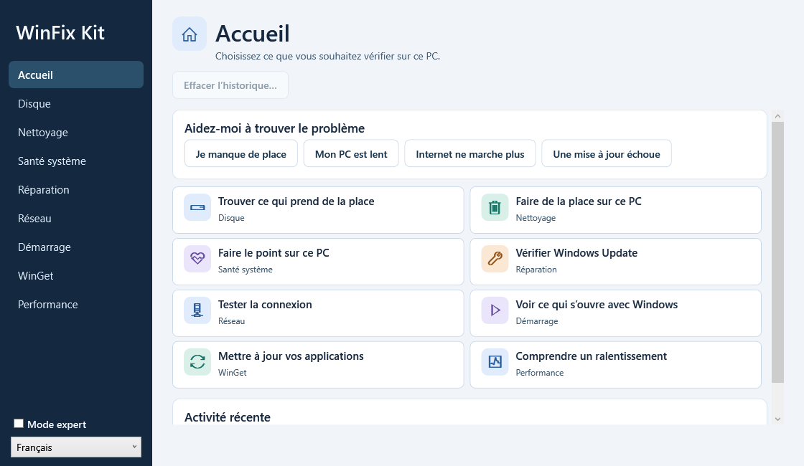

Analyseur d’espace disque
Repérez les fichiers et dossiers volumineux et exportez la liste en HTML ou CSV.
L’APPLICATION WINDOWS COMPLÈTE
Dépannez votre PC, étape par étape.
Choisissez le problème que vous rencontrez. Le mode guidé vous aide à comprendre les résultats et à décider quoi faire. Le mode expert donne accès aux réglages avancés.

Préversion publique 2.11.3
Windows 11 x64 · ZIP portable de 62,4 Mio · Français et anglais. L’exécutable de cette préversion est non signé.
Le catalogue propose 30 réparations et 3 diagnostics. Le mode expert affiche les interventions avancées.
Pour un besoin précis, téléchargez un outil séparément. Ces deux fonctions sont également incluses dans WinFix Kit.
Repérez les fichiers et dossiers volumineux et exportez la liste en HTML ou CSV.
Consultez un inventaire de Windows, du matériel et des événements récents dans un rapport local.
Téléchargez le ZIP, faites un clic droit dessus et choisissez Extraire tout. Dans le dossier extrait, ouvrez WinFixKit.exe, puis choisissez le problème à examiner.
Signaler un problème sur le site ↗Les scripts sont publiés sur GitHub : vous pouvez consulter leur code avant de les exécuter.
Les outils de diagnostic évitent les modifications destructrices. Les réparations sont documentées et explicites.
Les informations recueillies restent sur votre ordinateur, sauf indication contraire explicite.
WinFix Kit est gratuit et open source. Si un outil vous a été utile, vous pouvez m’offrir un café pour soutenir son développement.
Aucune obligation : utiliser le projet ou signaler un problème est déjà une aide précieuse.